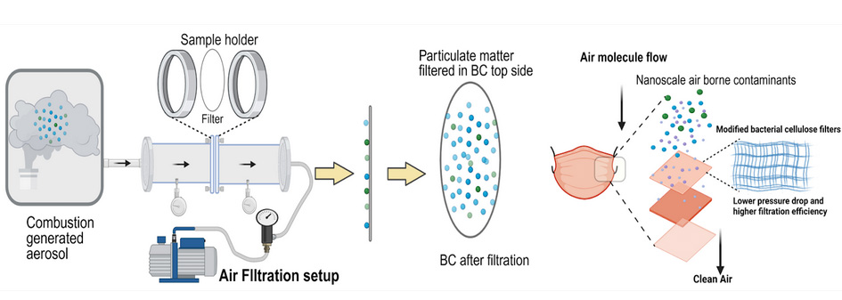
Bacterial Cellulose based Air Filters
Development of modified bacterial cellulose filters for nanoscale air-borne contaminants, achieving higher filtration efficiency with lower pressure drop
We are dedicated to advancing materials science with a focus on Bacterial Cellulose and innovative composite applications.
Pioneering the next generation of sustainable polymers, Prof. Mudrika leads our multidisciplinary team in translating fundamental biomaterials research into scalable, eco-friendly technologies.
Cellulose is the most abundant naturally occurring biopolymer, produced by nature through a bottom-up assembly process into an efficient hierarchical structure. This structure enables it to adapt and provide essential mechanical support to plants and trees. Common applications of cellulose include paper, textiles, and fillers, while more advanced uses extend to technical fields such as energy storage and conversion, drug delivery, devices, environmental remediation, smart packaging. In addition to plants, cellulose is also produced by a variety of organisms, including tunicates and bacteria. Certain bacteria synthesize cellulose as a means of enhancing their own survival. This bacterial cellulose exhibits remarkable properties, such as a nanofibrous three-dimensional interconnected network, high crystallinity, and exceptional water-holding capacity.
While most people associate cellulose purely with trees and paper, certain microorganisms spin their own pure nanocellulose sheets to protect itself from drying out, UV light, and competing organisms, while also acting as a microscopic raft to keep them floating near the oxygen-rich surface.
Bacterial Cellulose offers significant advantages in terms of processing, optimization, and tunability. Its unique properties have led to growing interest in a wide range of applications including energy storage and conversion, drug delivery systems, devices, environmental remediation, and sustainable packaging. Notably, bacterial cellulose is inherently pure, eliminating the need for the harsh chemical treatments typically required to process plant-derived cellulose.
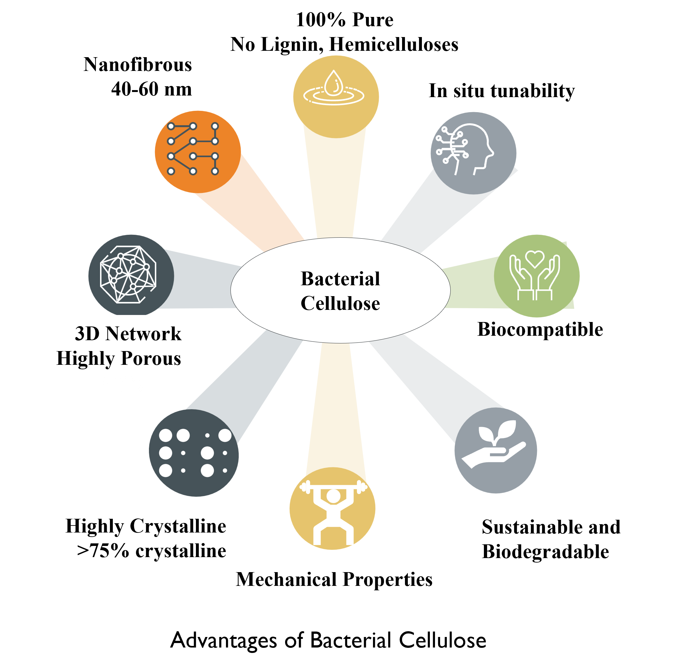
Research with purpose. Insights with impact.
We engineer bacterial cellulose in versatile forms—from sheets and beads to advanced surface coatings—using optimized culture media. By exploring pore engineering, in-situ functionalization, and ex-situ patterning, we are actively unlocking new functional properties for next-generation materials.
We harness bacteria as living micro-factories to literally weave and assemble complex structures at the nanoscale. By guiding their natural biosynthesis, we are exploring in-situ patterning to engineer advanced biocomposites and cultivate unique bacterial cellulose beads.
Our lab transforms bacterial cellulose into advanced architectural forms, developing high-strength BC fibers, ultra-lightweight foams, and versatile beads. We are actively exploring the integration of responsive elements, such as ferrofluids, to engineer smart, functional composites with tunable physical properties.
We engineer smart bacterial cellulose composites designed to actively resist biological and environmental contamination. By combining hydrophobic treatments with advanced photocatalysis, our current research focuses on embedding lasting antimicrobial and antifungal defenses directly into the material structure.
Our lab engineers bacterial cellulose into sophisticated delivery vehicles by tuning its hydrophilic and hydrophobic properties to accommodate diverse therapeutics. We are currently exploring multiresponsive composites to achieve precise, triggered release profiles and highly controlled delivery kinetics
We cultivate dynamic living materials by combining the unique scaffolding of bacterial cellulose with active biological systems. From exploring symbiotic mushroom growth and functional beads to advancing clinical applications in scar-free healing, guided tissue regeneration, and artificial organs, we are pushing the frontiers of bio-integration
Our lab is redefining sustainable food storage by developing active and smart packaging from bacterial cellulose. We are actively exploring embedded freshness indicators, targeted absorbers, and built-in antimicrobial properties to maximize shelf life and enhance overall food safety
Our lab develops eco-friendly wastewater solutions utilizing the unique structural advantages of bacterial cellulose. We are actively exploring advanced filtration membranes engineered specifically for the rapid capture and highly efficient removal of industrial dyes
Our lab transforms bacterial cellulose into smart, electro-active materials through the targeted integration of semiconducting polymers. We are actively exploring these versatile composites to fabricate flexible sensors, dynamic actuators, and advanced colorimetric AST devices for rapid diagnostics
Our lab develops sustainable energy storage components by transforming bacterial cellulose into high-performance electrodes and robust battery separators. Through targeted in-situ doping, we are actively exploring new ways to maximize electrochemical efficiency and push the limits of next-generation power devices
Our lab accelerates biomaterial design by combining experimental data with advanced computational modeling. We are actively exploring image processing for precision color-based bacterial tracking and leveraging Density Functional Theory (DFT) to engineer material interactions from the molecular level up
Exploring the multifunctional applications of Bacterial Cellulose and Sustainable Composites

Development of modified bacterial cellulose filters for nanoscale air-borne contaminants, achieving higher filtration efficiency with lower pressure drop
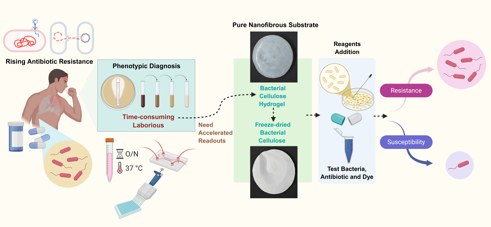
Developing bacterial cellulose-based platforms for rapid point-of-care antibiotic susceptibility testing to tackle antimicrobial resistance, using simple colorimetric assays that enable clear differentiation between bacterial susceptibility and resistance within clinically relevant timeframes
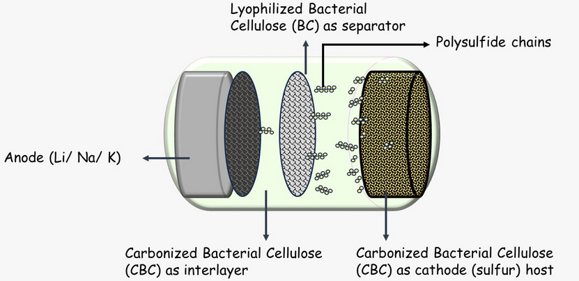
Utilizing carbonized BC as an interlayer and cathode host, and lyophilized BC as a separator in advanced Li/Na/K batteries
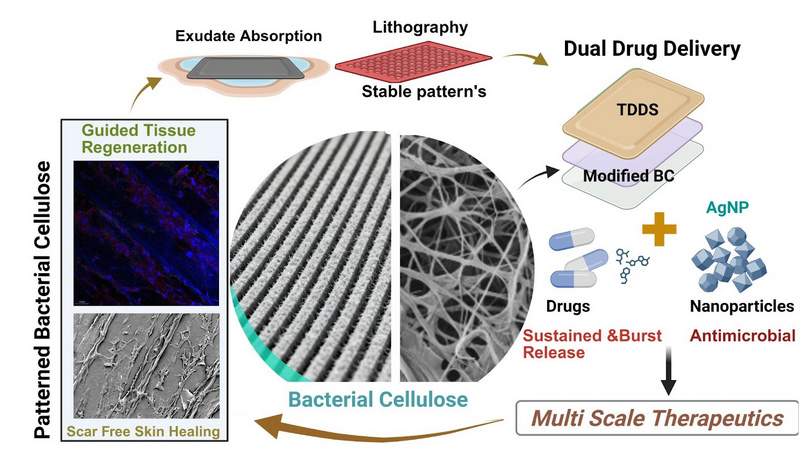
Patterned bacterial cellulose created via lithography for dual drug delivery and guided tissue regeneration in scar-free skin healing
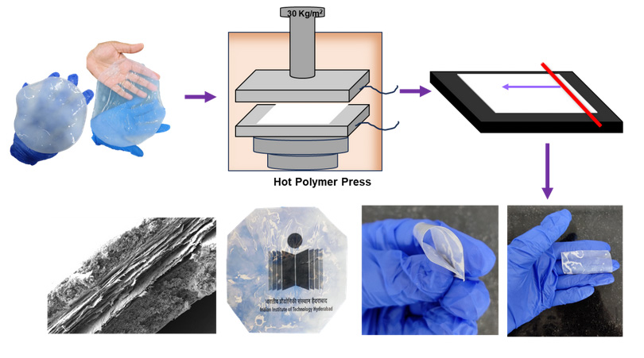
Promoting a circular economy by using food waste to produce BC-based flexible, translucent, and printable composites for cheese packaging
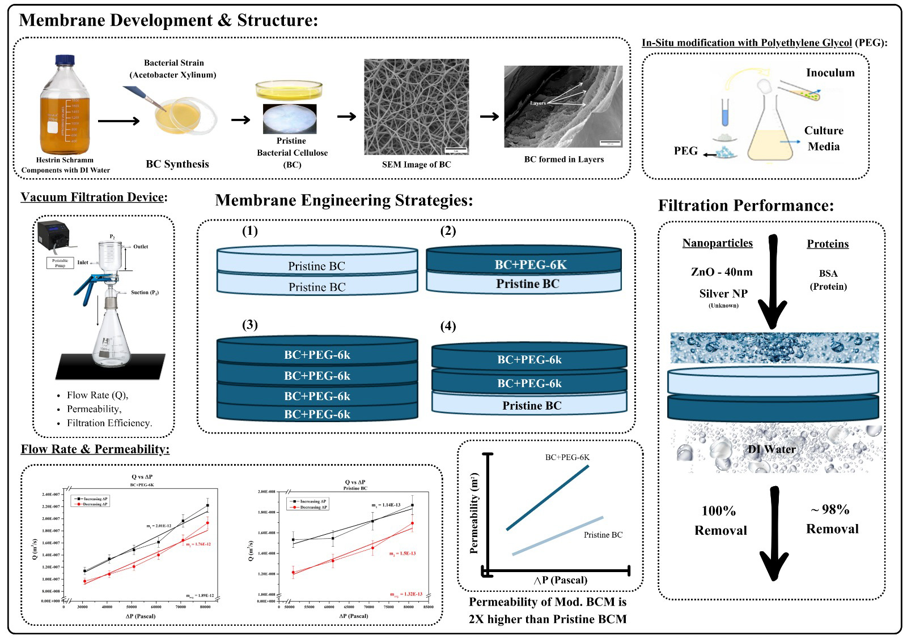


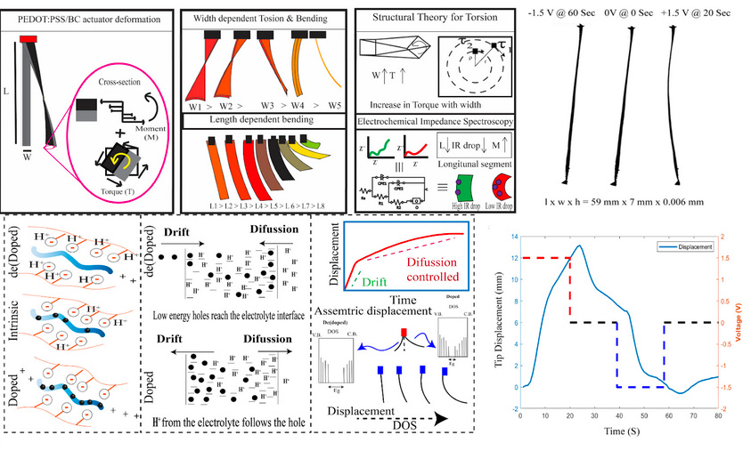
Design and development of transdermal drug delivery systems and studying width/length dependent torsion and bending in BC actuators
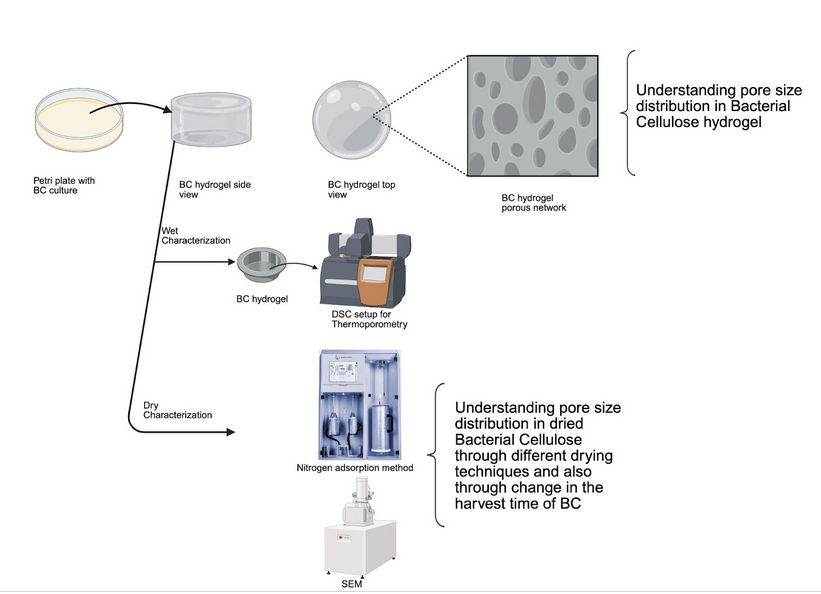
Understanding the evolution of porosity in Bacterial Cellulose hydrogel with harvest time and also exploring various drying routes and their effect on swellability
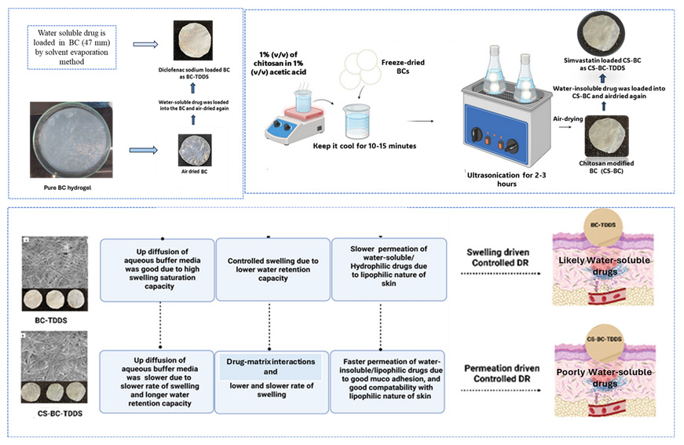
Design and Development of Transdermal Bacterial Cellulose-Based Drug Delivery Systems for Drugs with varying solubility
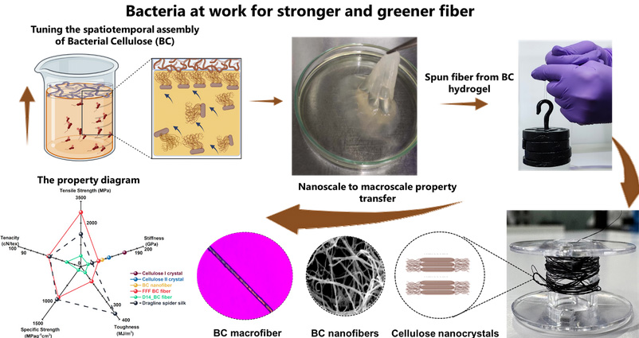
Fine-tuning bacterial cultures to produce spinnable hydrogels and experiments across the spectrum, from gels to liquid crystalline suspensions, to develop fibers that translate nanoscale mechanics to the macroscale.
Meet the researchers driving the Cellulose and Composite Group
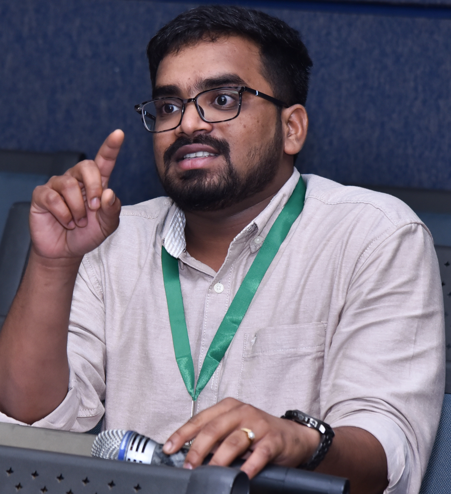
Ph.D. Scholar
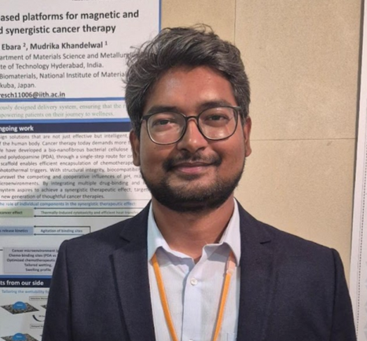
Joint Ph.D. Scholar
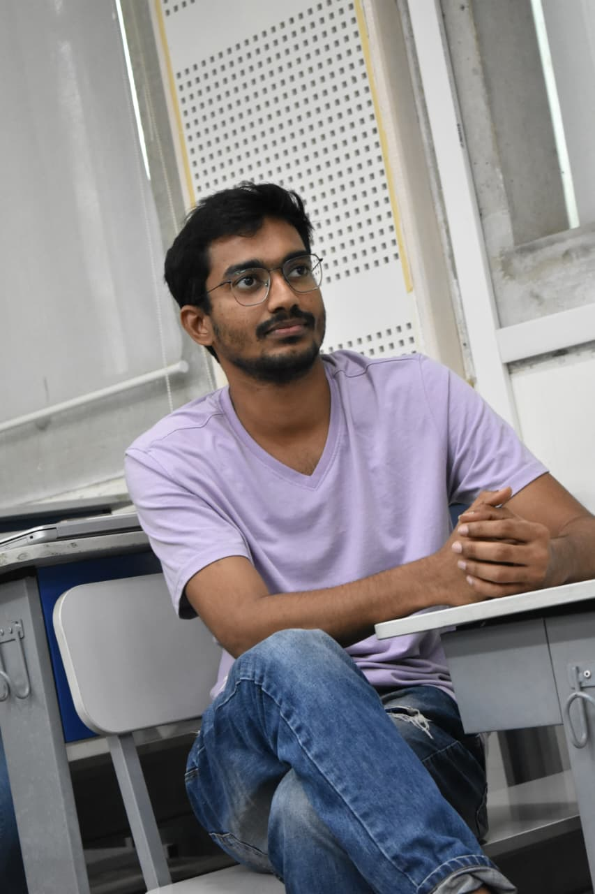
Ph.D. Scholar
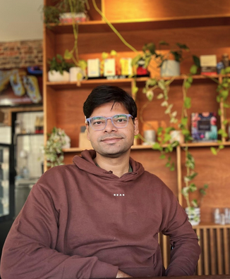
Joint Ph.D. Scholar

Ph.D. Scholar

Ph.D. Scholar
Ph.D. Scholar

Ph.D. Scholar
Ph.D. Scholar

Post-doctoral Fellow
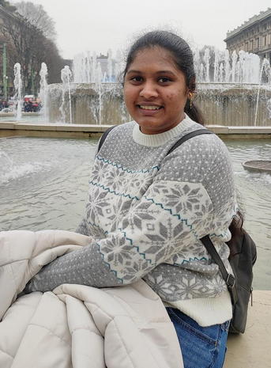
Post-doctoral Fellow
Senior Research Fellow

Technical Staff
We are incredibly proud of the researchers who have worked in the Cellulose and Composite Group and gone on to make impacts in academia and industry.
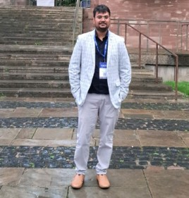
University of Southampton, UK
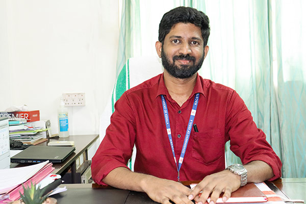
KSCS
NIT Warangal

IIT Hyderabad
University of Southampton, UK
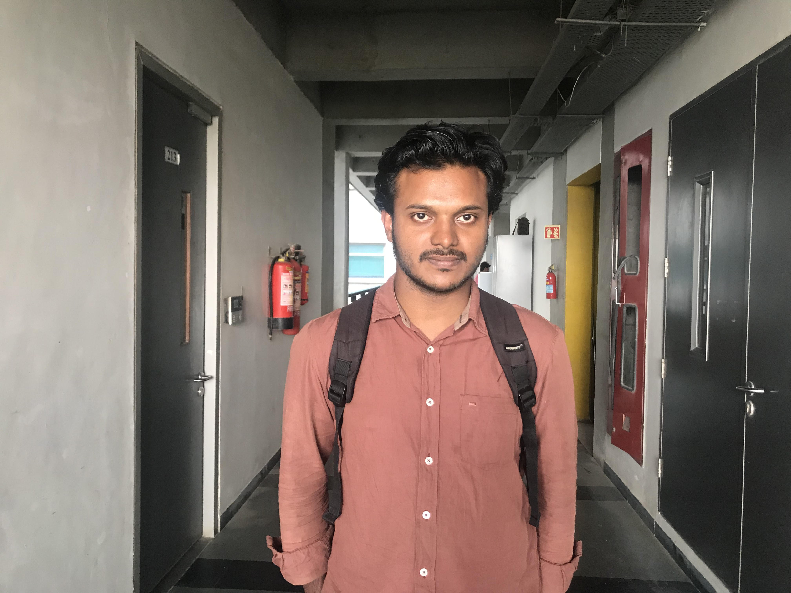
upGrad
IIT Delhi
NIT Tiruchirappalli
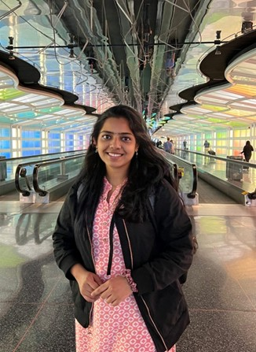
Northwestern University, USA
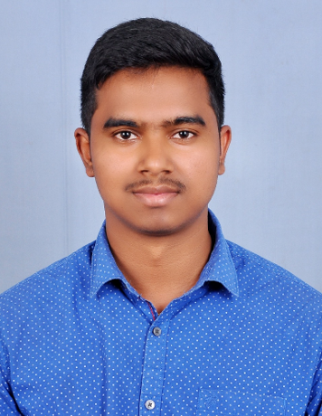
Global Foundries
IISc Bangalore
ZoomRx
IIT Hyderabad
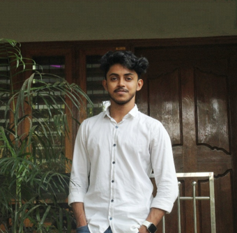
NTU, Singapore
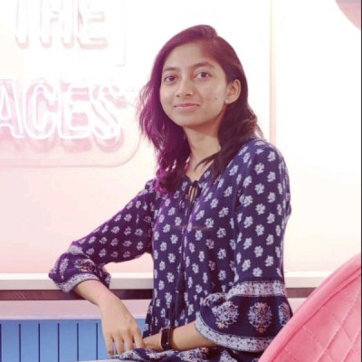
IISc Bangalore
NTU, Singapore
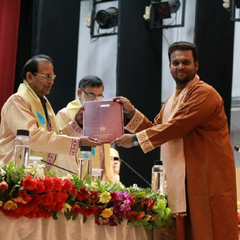
Monash University and IIT Bombay
IIT Hyderabad
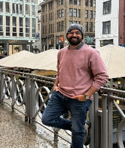
University of Münster
Imperial College London
GreyB
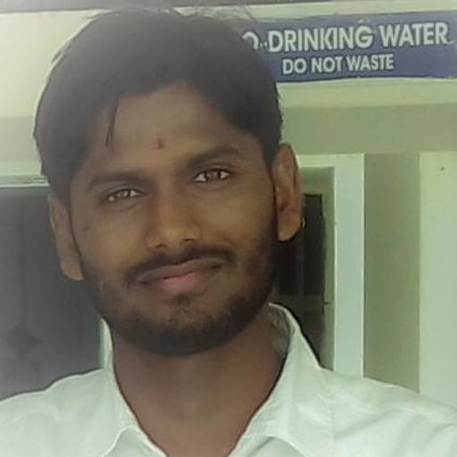
IIT Kharagpur
Technical University of Denmark
Institute of Science Tokyo, Japan
Hylenr Technologies Pvt. Ltd.
Soudal
Professor, Dept. of Materials Science and Metallurgical Engineering
IIT Hyderabad
Professor, Dept. of Chemical Engineering
IIT Hyderabad
Associate Professor, School of Life Sciences
University of Hyderabad
Associate Professor, Dept. of Materials Science and Metallurgical Engineering
IIT Hyderabad
Associate Professor, Dept. of Chemistry and Biotechnology
Swinburne University of Technology, Australia
Scientist, Biochemistry Department
Indian Agricultural Research Institute, New Delhi
Professor, Dept. of Materials Science and Metallurgical Engineering
IIT Hyderabad
Dept. of Mechanical Engineering
National University of Singapore
Professor of Surface Engineering
Swinburne University, Australia
Professor of Chemistry, Associate Dean Research
Swinburne University of Technology
Associate Professor, Department of Civil Engineering
IIT Hyderabad
Associate Professor, Department of Chemical Engineering
IIT Hyderabad
Malai
Espin Nanotech
Waycool
Maithri Aquatech
AT&T
Ph.D. Scholar
Project: Unlocking the Potential of Bacterial Nanocellulose as Cathode Host for Metal Sulfur Batteries.
About: Parnika is a researcher working at the intersection of electrochemistry and energy storage systems. Her work focuses on utilizing bacterial nanocellulose as a sustainable cathode host for metal sulfur batteries, an alternative to conventional lithium-ion batteries. By engineering carbon nanofiber-based structures derived from bacterial cellulose, she aims to overcome challenges such as low conductivity and polysulfide shuttling, ultimately contributing to high-performance, cost-effective, and eco-friendly energy storage solutions.
Email: id23resch11009@iith.ac.in
LinkedIn: linkedin.com/in/parnika-p
Ph.D. Scholar
Project: Design and Fabrication of High Entropy Shape Memory Alloys
About: Spandana is a researcher exploring high entropy shape memory alloys, a new class of smart materials that combine exceptional structural and functional properties. She is particularly interested in designing these alloys for high-temperature applications and advanced functional uses. Beyond their structural promise, she also collaborates with the bacterial cellulose group to investigate how these alloys interact with microorganisms, carrying out antifouling studies that open pathways for biomedical and marine applications. Her work is supported by the DRDO Young Scientists Laboratory for Smart Materials.
Email: ms23resch14009@iith.ac.in
LinkedIn: linkedin.com/in/spandana
Ph.D. Scholar
Project: Development of a Bacterial Cellulose-based Microfluidic Device for Antibiotic Susceptibility Testing
About: Sarita C is a doctoral scholar working on bacterial cellulose–based microfluidic devices for antibiotic susceptibility testing. Her research focuses on transforming freeze-dried bacterial cellulose into patterned, biodegradable platforms that can confine fluids and enhance the interaction between antibiotics and bacterial cells. With an emphasis on simplicity, reliability, and sustainability, her work aims to create accessible point-of-care diagnostic tools. Her project is supported by the Science and Engineering Research Board (SERB-CRG).
Email: id24resch11006@iith.ac.in
LinkedIn: linkedin.com/in/sarita-c
Post-doctoral Fellow
Project: Biodegradable Self-Sanitizing Bacterial Nanocellulose Fabrics and Micronutrient Delivery
About: Dr. Jiji Swaminathan works on developing bacterial cellulose-based eco-friendly materials for healthcare, environmental, and agricultural applications. She completed her Ph.D. at DRDO-BU-CLS, focusing on bacterial cellulose for third-degree burn wound dressings. Her current research explores biodegradable self-sanitizing fabrics for air and water filtration, as well as bacterial cellulose microbeads for controlled micronutrient delivery. Her project is supported by the National Technical Textiles Mission (NTTM).
Email: ms24pdf05@iith.ac.in
LinkedIn: linkedin.com/in/jiji-swaminathan
Technical Staff
About: With 14 years of research and teaching experience, Sai Matha serves as the technical backbone of the group. Her expertise spans molecular biology, protein biochemistry, cell culture, microbiology, and analytical techniques, enabling a wide spectrum of experimental work to progress seamlessly. Beyond technical execution, she plays a pivotal role in training students, maintaining laboratory standards, and ensuring continuity across diverse research projects. As the pillar of support for the Cellulose and Composites Group, her contributions underpin the success of ongoing projects in biofabrication, drug delivery, and advanced materials research.
Email: saimatha.g@msme.iith.ac.in
LinkedIn: linkedin.com/in/saimatha-g
A complete record of our group's research output and intellectual property.
Bacterial cellulose-based microfluidic POC device for AST
Patent Number: 585460 Year: 2026
A method of extraction of high-performance fibres from bacterial cellulose and the fibres produced thereof
Patent Number: 560074 | Year: 2024
Pharmaceutical compositions and delivery systems for prevention and treatment of candidiasis
Patent Number: US Patent App. 17/276,478 | Year: 2022
An in-vitro glomerular filtration barrier (gfb) membrane and a method of preparation thereof
Application Number: 202441071348
Carbon Fibre-based ethylene absorber for active food packaging, Indian patent application
Application Number: 202241063104
Bacterial cellulose-based slippery liquid-infused porous surfaces and preparation method thereof
Application Number: 202541106818
A method of fabricating a heteroatom multidoped carbon nanofiber composite-based electrode
Application Number: 202541106818
A platform for parameter-programmed morphogenesis and transition control of bacterial cellulose beads and bead-derived architectures
Microbially derived cellulose architecture-stabilized, surfactant-free magnetic nanofluid platform enabling anisotropy-network transitions and flow-magnetic response balancing
Single-step cooperative in situ method for preparing an interfacially locked tri-component scaffold for post-surgical recurrence prevention and programmable multimodal local cancer therapy
A Material Roadmap for Translational and Sustainable Point-of-Care Diagnostics Through Bacterial Cellulose: A Comprehensive Review
ACS Applied Bio Materials
A biomimetic in vitro glomerular filtration barrier model for investigating renal barrier dysfunction in hyperglycemia
Biomaterials Advances
Freeze‐Dried Bacterial Cellulose‐Based Point‐of‐Care Device for Antibiotic Susceptibility Testing (AST)
Macromolecular Bioscience 26 (1), e00557
Dual‐Stimuli Chemotherapeutic Delivery From Magnetic Bacterial Nanocellulose: Unraveling the Optimized Loading and Release at Tailored Wetting and Localized Heating
Small 21 (50), e01284
Mechanistic Progress and Challenges for Carbon‐Based Protective Interlayer/Separator Modification for the Practical Development of Next‐Generation Alkali Metal–Sulfur Batteries
Batteries & Supercaps 8 (12), e202500219
Man-material-matters: a dialogue
Proceedings of the Indian National Science Academy, 1-13
Integrating life into material design for living materials 4.0: Navigating challenges and future trajectories from static to dynamic evolution
Materials Today
Nanoscale Synergy: Transforming First Formed Film of Bacterial Cellulose into High‐Performance Functional Fibers
Small 21 (31), 2501880
Governing the magnetic hyperthermia performance through assembly effect in superparamagnetic biocomposites: Dispersed chains and clustered assemblies immobilized on the …
Journal of Magnetism and Magnetic Materials 625, 173076
Hole controlled displacement behaviour of conducting polymer actuators
Composites Part B: Engineering 301, 112525
Concentration-dependent bacterial cellulose patches: a strategy for modulating the drug release beyond the modifications of the native cellulose hydrogel
Proceedings of the Indian National Science Academy 91 (2), 625-636
Bacterial cellulose in transdermal drug delivery systems: Expanding horizons in multi-scale therapeutics and patient-centric approach
International Journal of Pharmaceutics 671, 125254
Bacterial Nanocellulose and Plant Fiber derived (Nano and Micro) Carbon Fiber-Based Sensors to Detect Volatile Organic Compounds
2025 IEEE Applied Sensing Conference (APSCON), 422-425
| # | Course Name | Category |
|---|---|---|
| 01 | Polymeric Biomaterials: Science & Applications | Biomaterials |
| 02 | Characterization of Polymer & Bio Systems | Characterization |
| 03 | Science and Engineering of Materials | Core Materials |
| 04 | Materials Synthesis Lab | Lab/Practical |
| 05 | Polymers | Polymer Science |
| 06 | Introduction to Materials Science and Engineering | Core Materials |
| 07 | Structure of Materials | Core Materials |
| 08 | Soft Matter Science | Soft Matter |
| 09 | Functional Properties Characterization Lab | Lab/Practical |
| 10 | Functional and Structural Polymers | Polymer Science |
| 11 | Non-Ferrous Extractive Metallurgy | Metallurgy |
| 12 | Soft Materials | Soft Matter |
| 13 | Polymer Science and Engineering | Polymer Science |
| 14 | Hierarchical Nanostructured Materials | Nanotechnology |
| 15 | Nature Inspired Materials Engineering | Advanced Engineering |
| 16 | Nature Inspired Materials Engineering for Mechanical Application | Advanced Engineering |
| 17 | Nature Inspired Materials Engineering for Wettability, Optical Tunability | Advanced Engineering |
| 18 | Functional Polymer & Composites | Composites |
| 19 | Antifouling and Antimicrobial Materials | Biomedical |
| 20 | Bio and Soft Materials | Soft Matter |
| 21 | Smart Packaging | Sustainability/Industry |
We take science beyond the lab to educate and engage our community, bridging the gap between research and society to inspire young minds toward a sustainable future
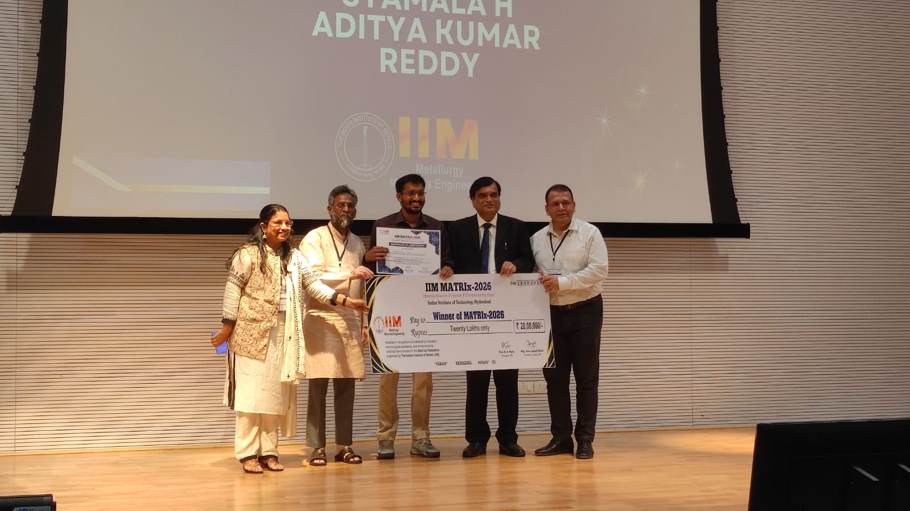
Aditya Syamala Reddy wins 20 Lacs for the startup
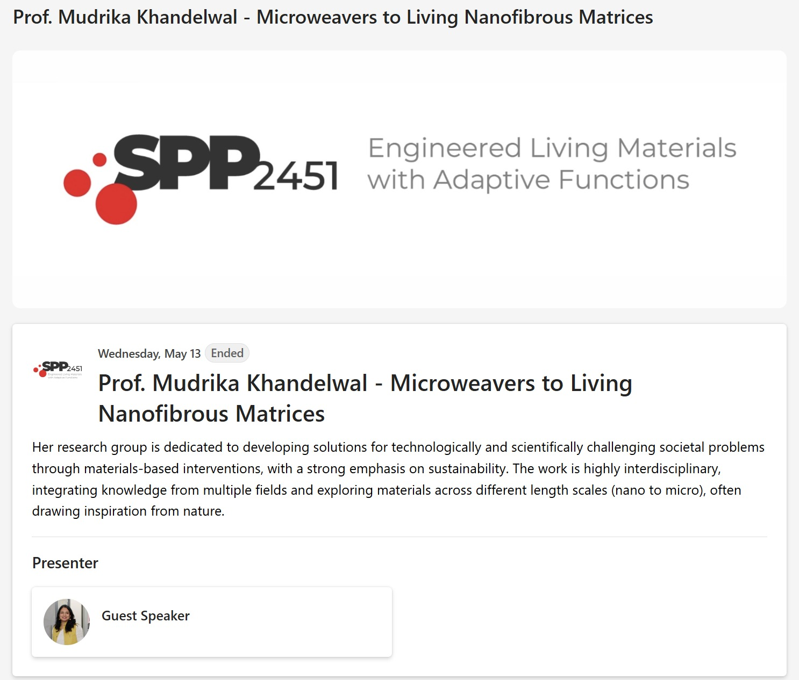
The talk was on "Microweavers to Living Nanofibrous Matrices"
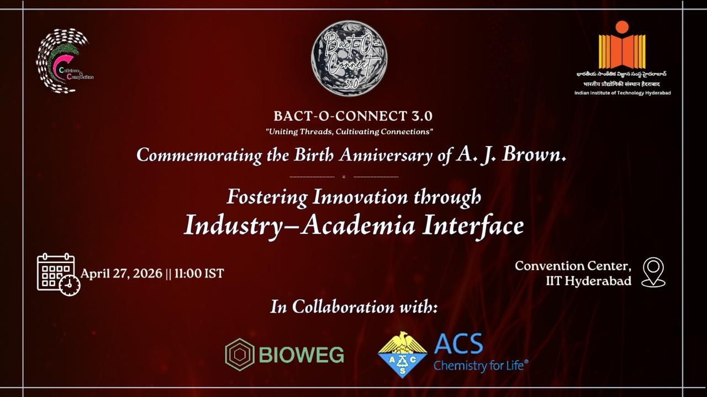
Successfully conducted Bact-O-Connect 3 on April 27th, 2026 Commemorating the Birthday of A.J. Brown
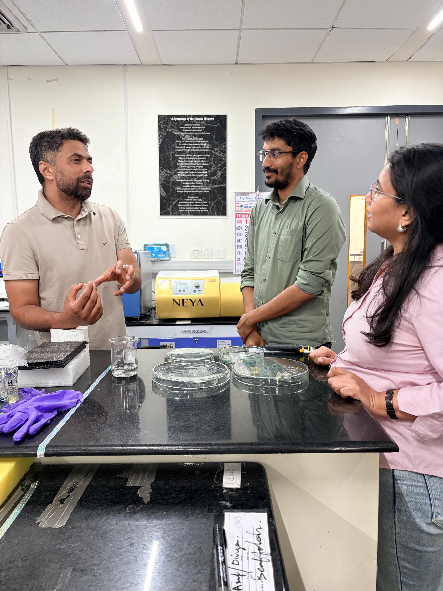
Dr. Vikramjeet visited IIT Hyderabad and also delivered an amazing talk on Architecture-driven coatings. Dr. Vikramjeet is lecturer in Nanoengineering at the Department of Mechanical Engineering, University College London.
In this TEDx talk, Prof. Mudrika explains how nature creates the illusion of color. She stated that human beings are gifted with five sensory instruments that allow them to perceive the world around them.
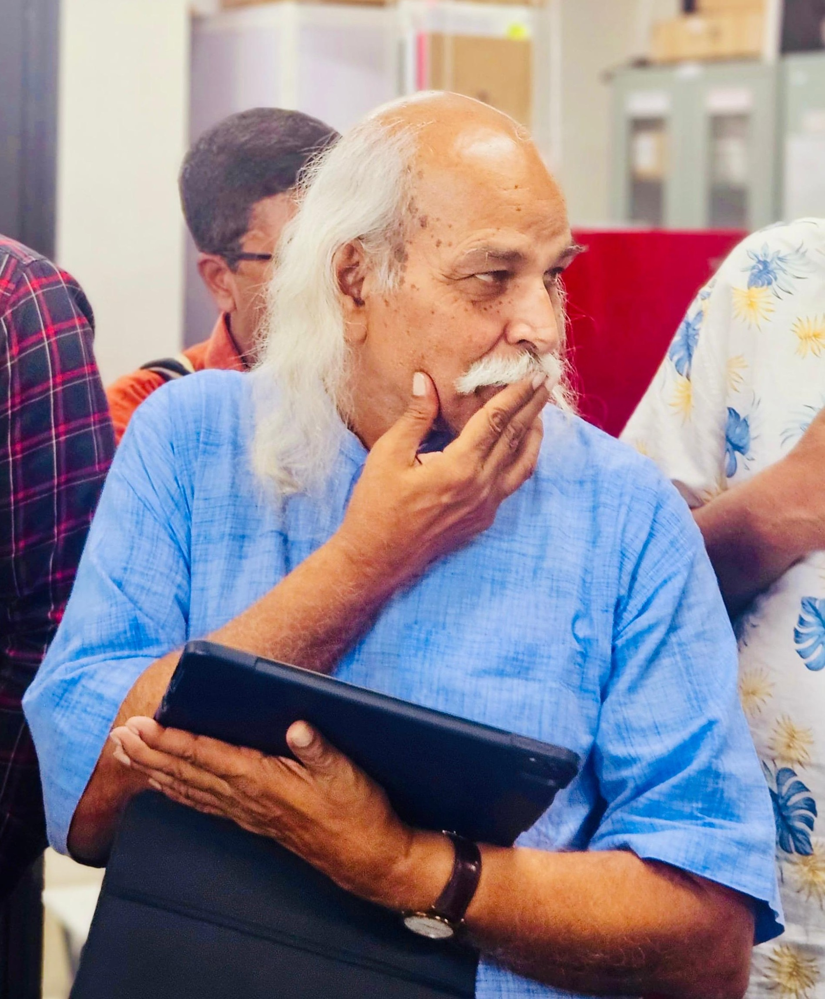
The journey of any JEE aspirant begins with the Dr. HC Verma's "Concepts of Physics". We were fortunate to have him visit our lab.
Discover the awe-inspiring wonders of nature in our upcoming book discussion on "Demystifying the Nature."
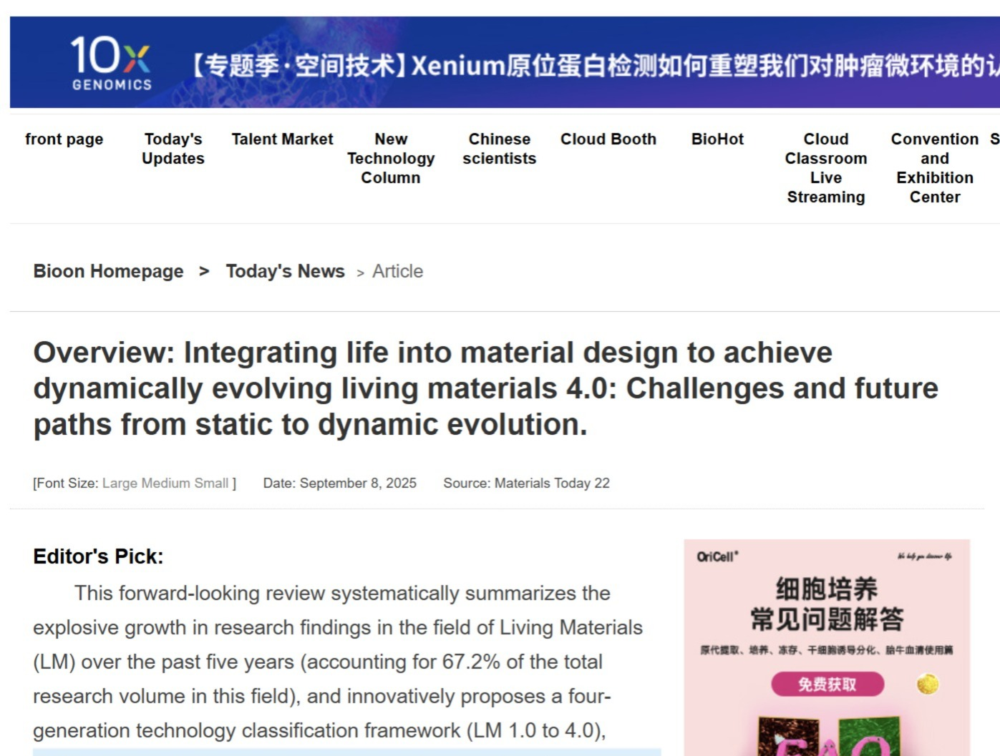
Our article was chosen as "Editor's Pick" in ebiotrade, which is a China-based online platform focused on life sciences and biotechnology. It is a scientific information portal covering biology, biotech, and biomedical research all around the world
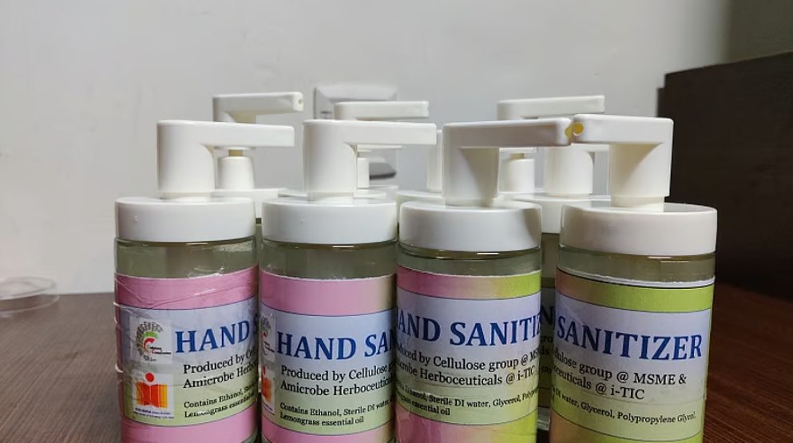
A hand sanitiser has been developed in-house at the Indian Institute of Technology Hyderabad for the benefit of the 2,855 students and 210 full-time faculty on the vast campus
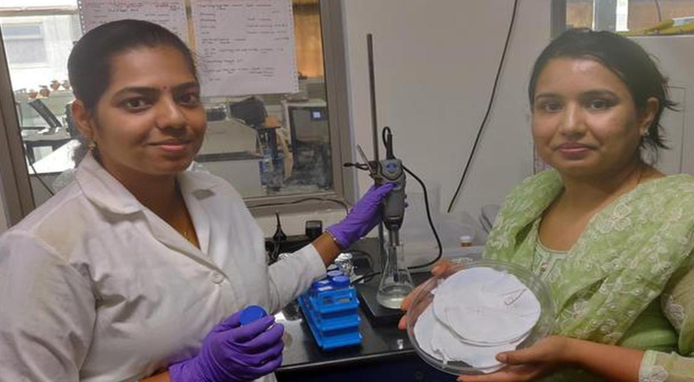
IIT-H team develops essential oil-based treatment that can even counter conventional drug-resistant fungi
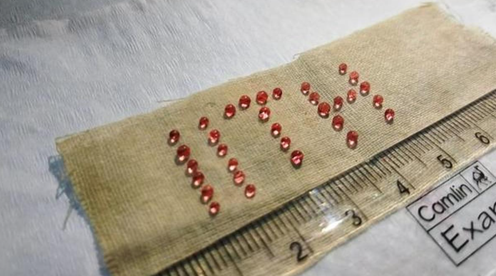
Stearic acid-coated fly ash surface can be made to behave like rose petals or lotus leaves
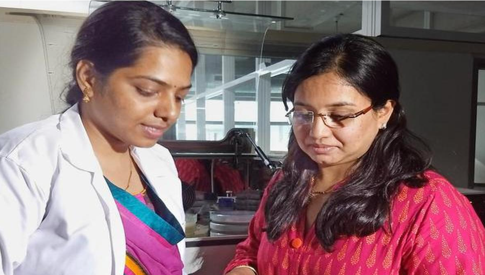
Composite has antimicrobial activity, allows optimum exchange of gases and moisture
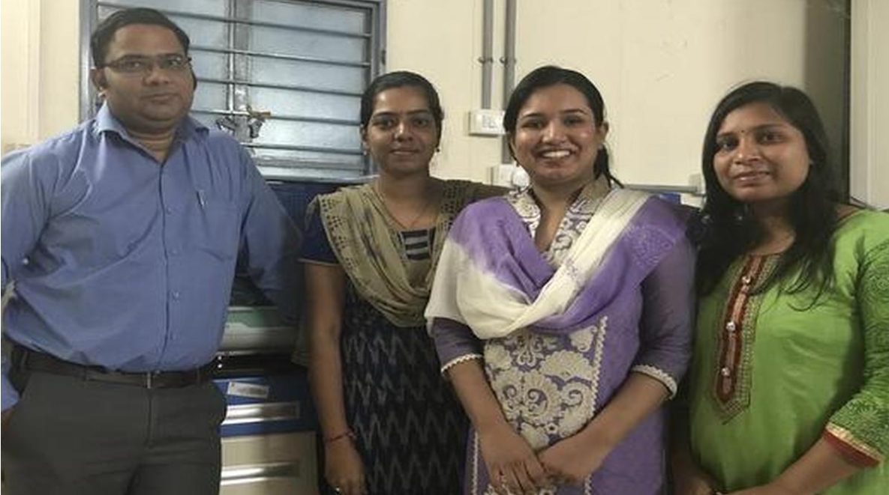
The amount of drug in the patch can be modified so that it is released at desired rate
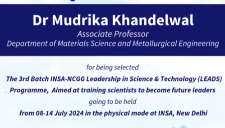
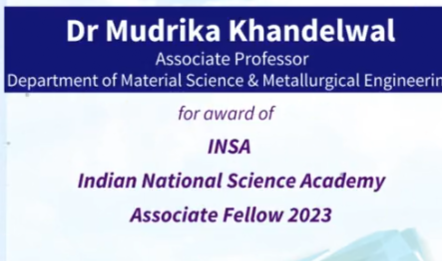
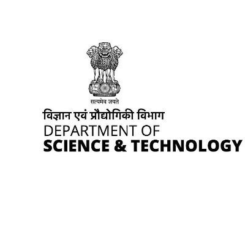
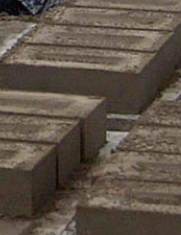
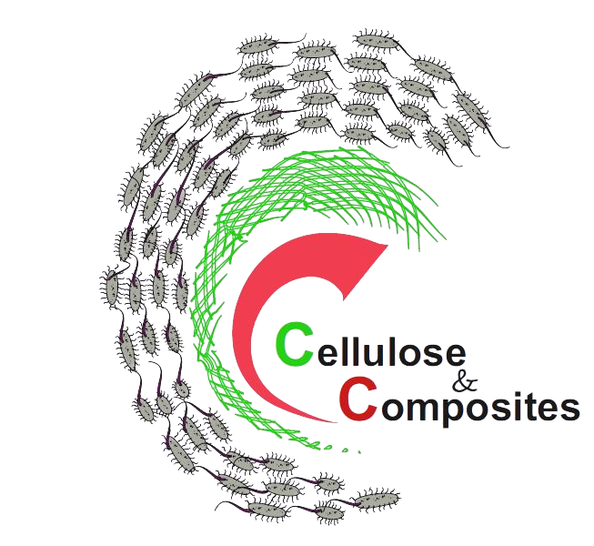
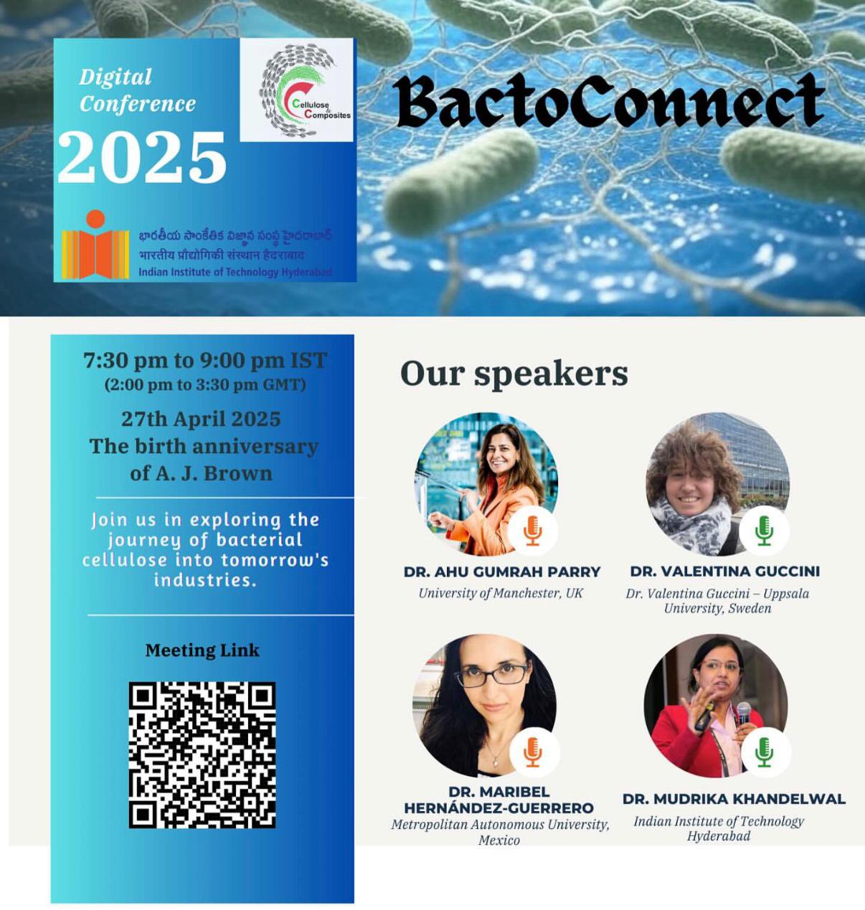
Connecting minds and building bonds, sharing our journey both inside the lab and out in the world
At the Cellulose & Composites Group, we are pushing the boundaries of sustainable bio-materials. We are always looking for driven, innovative minds to help us engineer solutions for tomorrow.
Whether you are looking to start your research journey or bring advanced expertise to our lab, there is a place for you here.
cellulosegroup@msme.iith.ac.in
Lead cutting-edge research.
Hands-on external thesis work.
Contribute from anywhere.
Drive our funded initiatives.
Kickstart your lab experience.